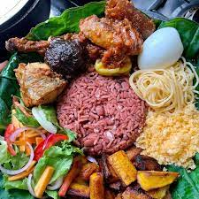

WAAKYE

WAAKYE DESCRIBTION
This is Ghanaian native food called waakye, it is made with rice and beans,
the beans is boiled with the rice till the mixed together
it is then pounded until it beomes soft and forms together
Waakye is normally served with black pepper source called shito
gari, salad and macroni. Waakye is best eaten in the morning
The Waakye Ingredient
- Rice
- Water
- Beans
- Water
- Brown leafs
- Petre salt
Shitto INGREDIENT
- Palm Nut
- Water
- Fish or meat
- pepper
- tomatoes
- pepper
- salt
STEPS FOR PREPARATION
- Boil the beans with petre salt to soften
- Add more water to the boiled beans and add the rice
- leave it to boil for about 30min and stir for the rice and beans to mix
- Pound the palm nuts to remove palm kernel
- Prepare the shito
- Prepare your salad and boil your macroni